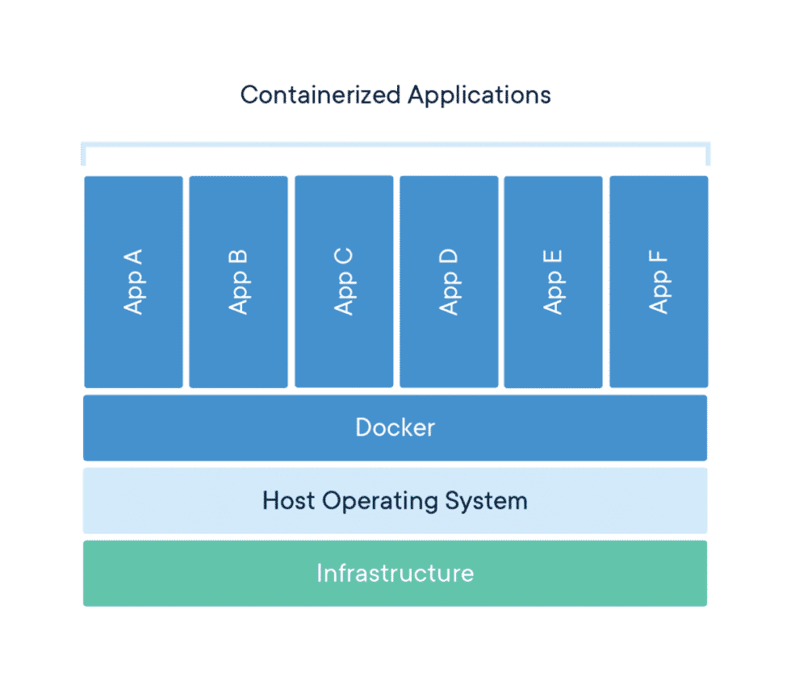
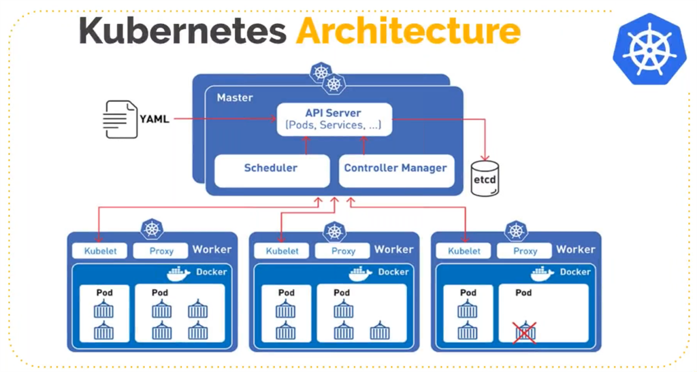
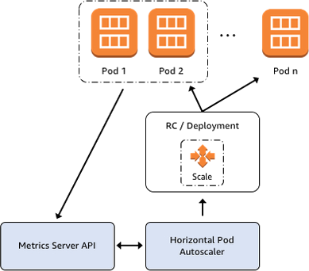

Kubernetes
LET'S CODE
Sobre mim

Vinícius Campitelli
- Membro do PHPSP
- Entusiasta em cibersegurança
- Desenvolvedor há 15 anos
- Instrutor na Let's Code
Sobre mim
Preparação
Para acompanhar o Workshop, siga os passos a seguir:
-
Clone esse repositório em
$ git clone -b letscode --recurse-submodules \ git@github.com:vcampitelli/workshop-kubernetes.git -
Acesse os slides abrindo
docs/index.htmlem seu navegador - Instale o Docker em docs.docker.com/get-docker
- Instale o minikube em minikube.sigs.k8s.io
-
Entre na pasta
scriptse execute:$ minikube start
Microsserviços
A variant of the soa structural style – arranges an application as a collection of loosely-coupled services. In a microservices architecture, services are fine-grained and the protocols are lightweight.Wikipedia
Microsserviços

Containers
Containers are an abstraction at the app layer that packages code and dependencies together. Multiple containers can run on the same machine and share the OS kernel with other containers, each running as isolated processes in user space. Containers take up less space than VMs (container images are typically tens of MBs in size), can handle more applications and require fewer VMs and Operating systems.Docker
Containers
Docker
Kubernetes
Kubernetes, also known as K8s, is an open-source system for automating deployment, scaling, and management of containerized applications.kubernetes.io
Kubernetes
C#Corner
Kubernetes
Pods
Pods are the smallest deployable units of computing that you can create and manage in Kubernetes.
Pod is a group of one or more containers, with shared storage and network resources, and a specification for how to run the containers. A Pod's contents are always co-located and co-scheduled, and run in a shared context.kubernetes.io
Kubernetes
Deployment
A Deployment provides declarative updates for Pods and ReplicaSets.kubernetes.io
You describe a desired state in a Deployment, and the Deployment Controller changes the actual state to the desired state at a controlled rate. You can define Deployments to create new ReplicaSets, or to remove existing Deployments and adopt all their resources with new Deployments.
Kubernetes
Service
An abstract way to expose an application running on a set of Pods as a network service.
In Kubernetes, a Service is an abstraction which defines a logical set of Pods and a policy by which to access them (sometimes this pattern is called a micro-service).kubernetes.io
Kubernetes
HorizontalPodAutoscaler (HPA)
In Kubernetes, a HorizontalPodAutoscaler automatically updates a workload resource (such as a Deployment or StatefulSet), with the aim of automatically scaling the workload to match demand.kubernetes.io
Kubernetes
HorizontalPodAutoscaler (HPA)
Horizontal scaling means that the response to increased load is to deploy more Pods. This is different from vertical scaling, which for Kubernetes would mean assigning more resources (for example: memory or CPU) to the Pods that are already running for the workload.kubernetes.io
Kubernetes
HorizontalPodAutoscaler (HPA)
If the load decreases, and the number of Pods is above the configured minimum, the HorizontalPodAutoscaler instructs the workload resource (the Deployment, StatefulSet, or other similar resource) to scale back down. Horizontal pod autoscaling does not apply to objects that can't be scaled (for example: a DaemonSet.)kubernetes.io
Kubernetes
HorizontalPodAutoscaler (HPA)
aws.amazon.com
Hands-on
Hands-on
1. Instalando minikube
Siga a documentação oficial em
minikube.sigs.k8s.io
para instalar o minikube de acordo com seu sistema operacional
Para ambientes Linux com arquitetura amd64, o comando é:
$ curl -LO https://storage.googleapis.com/minikube/releases/latest/minikube-linux-amd64
$ sudo install minikube-linux-amd64 /usr/local/bin/minikube
Hands-on
2. Iniciando o cluster
Clone ou atualize este repositório:
$ git clone -b letscode --recurse-submodules \
git@github.com:vcampitelli/workshop-kubernetes.git
Entre na pasta scripts e inicialize o
cluster com:
$ minikube start
Hands-on
3. Deploy do cluster
O minikube cria um serviço separado do Docker, então sempre que iniciarmos um terminal e quisermos interagir diretamente com ele, devemos especificar que queremos executar os comandos nesse novo ambiente:
$ eval $(minikube -p minikube docker-env)
Hands-on
3. Deploy do cluster
Execute os comandos abaixo para fazer o build das imagens do Docker:
$ docker build -t auth:latest auth
$ docker build -t comments:latest comments
$ docker build -t posts:latest posts
$ docker build -t users:latest users
Hands-on
3. Deploy do cluster
Agora, vamos começar a subir a nossa aplicação:
$ minikube kubectl -- apply -f k8s/jwt_keys.yml
$ minikube kubectl -- apply -f k8s/auth.yml
$ minikube kubectl -- apply -f k8s/comments.yml
$ minikube kubectl -- apply -f k8s/posts.yml
$ minikube kubectl -- apply -f k8s/users.yml
Hands-on
3. Deploy do cluster
Para acompanhar tudo que foi configurado:
$ minikube kubectl -- get pods
$ minikube kubectl -- get deployments
$ minikube kubectl -- get services
Hands-on
4. Acessando os serviços
Como não há um serviço de Load Balancing no minikube, devemos expor os
IPs dos serviços para eles serem acessados localmente
Execute o comando abaixo em um novo terminal e mantenha-o rodando:
$ minikube tunnel --cleanup
Hands-on
4. Acessando os serviços
Volte ao terminal anterior e execute o comando a seguir até que os quatro
EXTERNAL-IPs estejam alocados:
$ minikube kubectl -- get services
NAME TYPE CLUSTER-IP EXTERNAL-IP PORT(S) AGE
auth-service LoadBalancer 10.106.141.164 <pending> 3000:32110/TCP 1h
comments-service LoadBalancer 10.107.141.217 <pending> 3000:31457/TCP 1h
kubernetes ClusterIP 10.96.0.1 <none> 443/TCP 1h
posts-service LoadBalancer 10.106.220.106 <pending> 3000:32532/TCP 1h
users-service LoadBalancer 10.102.133.17 <pending> 3000:30921/TCP 1h
Hands-on
4. Acessando os serviços
Volte ao terminal anterior e execute o comando a seguir até que os quatro
EXTERNAL-IPs estejam alocados:
$ minikube kubectl -- get services
NAME TYPE CLUSTER-IP EXTERNAL-IP PORT(S) AGE
auth-service LoadBalancer 10.106.141.164 10.106.141.164 3000:32110/TCP 1h
comments-service LoadBalancer 10.107.141.217 10.107.141.217 3000:31457/TCP 1h
kubernetes ClusterIP 10.96.0.1 <none> 443/TCP 1h
posts-service LoadBalancer 10.106.220.106 10.106.220.106 3000:32532/TCP 1h
users-service LoadBalancer 10.102.133.17 10.102.133.17 3000:30921/TCP 1h
Hands-on
4. Acessando os serviços
Para facilitar, vamos guardar os quatro IPs com as portas em variáveis:
$ IP_AUTH=<IP-Auth>:3000
$ IP_COMMENTS=<IP-Comments>:3000
$ IP_POSTS=<IP-Posts>:3000
$ IP_USERS=<IP-Users>:3000
Você pode executar o script scripts/ips.sh para fazer isso
automaticamente:
$ eval $(./ips.sh)
Hands-on
4. Acessando os serviços
Para iniciar, vamos nos autenticar em nossa aplicação, executando o comando abaixo:
$ curl -X POST \
-u "admin:admin" \
"http://${IP_AUTH}/auth"
Resultado:
{
"status": true,
"access_token": "eyJhbGciOiJFUzI1NiJ9.eyJzY29wZXMiOlsidXNlcnMiLCJwb3N0cyIsImNvbW..."
}
Hands-on
4. Acessando os serviços
Salve o access_token em uma variável para facilitar as próximas chamadas:
$ TOKEN="eyJhbGciOiJFUzI1NiJ9.eyJzY29wZXMiOlsidXNlcnMiLCJwb3N0cyIsImNvbW..."
Teste os outros serviços:
$ curl -H "Authorization: Bearer ${TOKEN}" "http://${IP_COMMENTS}/comments"
$ curl -H "Authorization: Bearer ${TOKEN}" "http://${IP_POSTS}/posts"
$ curl -H "Authorization: Bearer ${TOKEN}" "http://${IP_USERS}/users"
Hands-on
5. Configurando o Autoscaling
Ative o plugin de Metrics para coletar dados do uso de recursos:
$ minikube addons enable metrics-server
Abra um novo terminal e aplique a regra de Autoscaling:
$ minikube kubectl -- apply -f k8s/hpa.yml
Hands-on
5. Configurando o Autoscaling
Abra um novo terminal e execute o comando abaixo para acompanhar o status:
$ watch -n 1 "minikube kubectl -- get hpa"
Também é possível rodar este comando para visualizar o histórico de ações:
$ minikube kubectl -- describe hpa posts
Hands-on
5. Configurando o Autoscaling
Baixe o wrk para realizar requisições simultâneas e execute:
$ wrk -t8 -c400 -d30s \
-H "Authorization: Bearer ${TOKEN}" \
"http://${IP_POSTS}/posts"
PS: esse comando irá abrir 400 conexões distribuídas em 8 threads durante 30 segundos.
Ajuste esses números para atender às especificações de sua máquina.
Referências
Obrigado!
LET'S CODE
4º andar